6.3 Exploratory Data Analysis
One variable, then pairs, then a third variable. Plot before you trust a summary.
1. A working order
Once the file is in and the types look right, explore before you model. EDA is curiosity with a notebook: many plots, many summaries, then a few questions worth keeping. Write the dead ends down so you are not only keeping the pretty ones.
A useful order:
- the distribution of each variable
- every pair of variables
- a third variable (color or facet)
- missingness and extremes
diamonds is the running example. skimr::skim() is a compact alternative to summary().
library(tidyverse)
data("diamonds")2. One variable
A categorical variable: counts and proportions. geom_bar() for the picture; table() and prop.table() for the numbers.
ggplot(diamonds, aes(x = color)) +
geom_bar() +
theme_bw()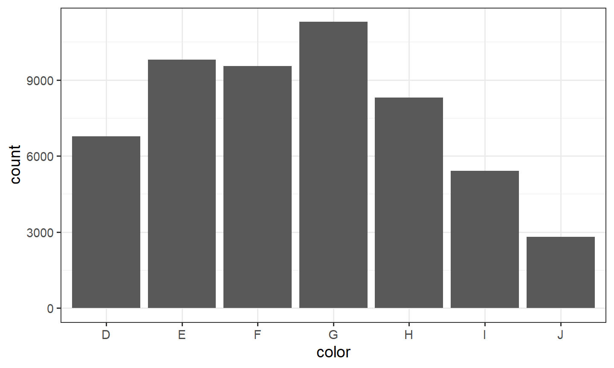
prop.table(table(diamonds$color))
D E F G H I J
0.12560252 0.18162773 0.17690026 0.20934372 0.15394883 0.10051910 0.05205784 Ask whether the levels have an order, and whether a rare level is real or a coding accident.
A quantitative variable: geom_histogram() or geom_density(), plus mean(), sd(), and fivenum() (min, lower hinge, median, upper hinge, max). Look for skew and extra modes.
ggplot(diamonds, aes(x = carat)) +
geom_histogram(bins = 50) +
theme_bw()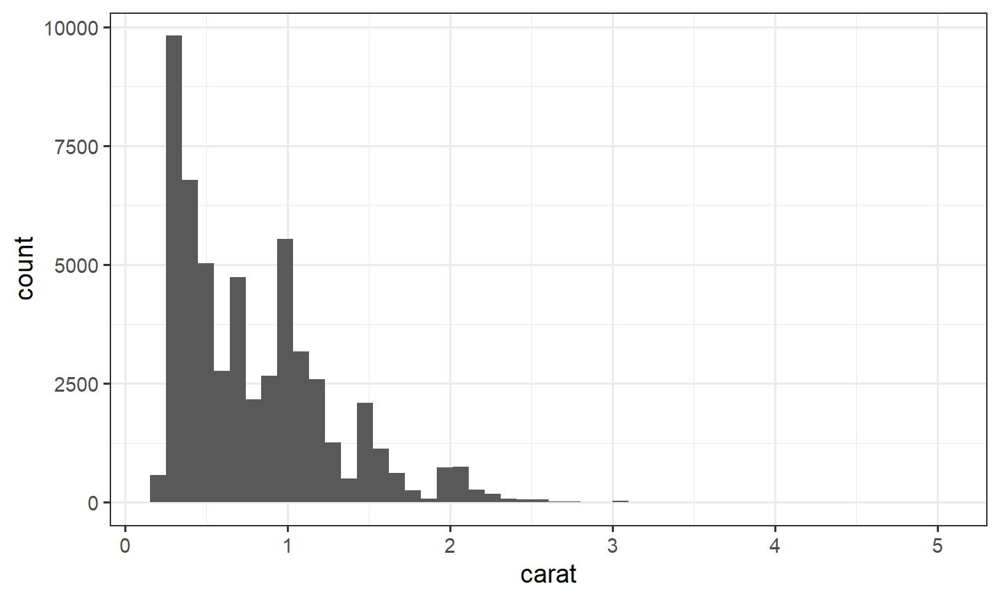
fivenum(diamonds$carat)[1] 0.20 0.40 0.70 1.04 5.01Color or geom_freqpoly() to split one quantitative variable by a category. Overlaid histograms hide each other. Frequency polygons share the same bins and stay readable.
ggplot(diamonds, aes(x = carat, color = cut)) +
geom_freqpoly(bins = 40) +
theme_bw()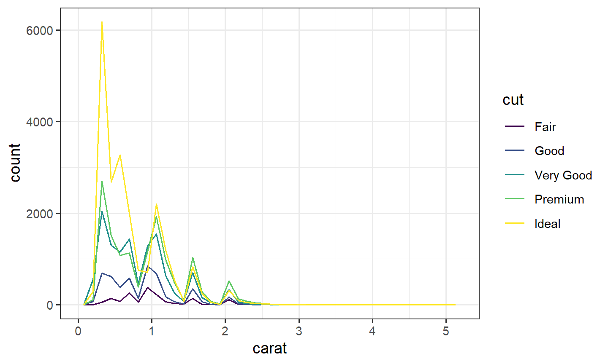
Too few bins hide a second mode. Too many bins turn the picture into noise. Change bins until the shape is stable.
3. Two variables
- Two quantitative:
geom_point(), then a smooth. Overplotting:alphaorgeom_hex()(note 3.2). - One categorical and one quantitative:
geom_boxplot(), maybe on a log scale. - Two categorical: a table of counts, then proportions within rows or within columns.
geom_count()draws that table as points. A mosaic plot draws it as areas. Section 4 is the mosaic.
margin = 1 makes each row sum to 1, so you read the distribution of color inside each cut. margin = 2 makes each column sum to 1.
prop.table(table(diamonds$cut, diamonds$color), margin = 1)
D E F G H I
Fair 0.10124224 0.13913043 0.19378882 0.19503106 0.18819876 0.10869565
Good 0.13493681 0.19017530 0.18528333 0.17753771 0.14309009 0.10640033
Very Good 0.12522761 0.19864261 0.17910942 0.19028307 0.15096838 0.09965238
Premium 0.11623523 0.16945834 0.16902328 0.21202233 0.17112610 0.10354579
Ideal 0.13150202 0.18110529 0.17753237 0.22662521 0.14454086 0.09711846
J
Fair 0.07391304
Good 0.06257644
Very Good 0.05611654
Premium 0.05858893
Ideal 0.04157580ggplot(diamonds, aes(x = cut, y = color)) +
geom_count() +
theme_bw()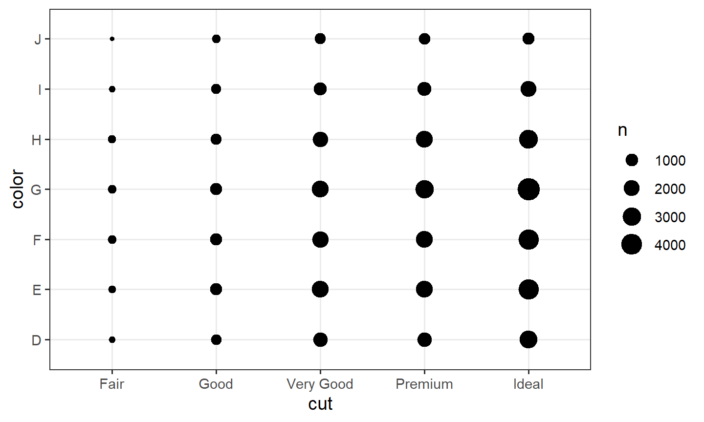
Point area in geom_count() is the count of that pair. The plot gets hard to read once either variable has many levels. A mosaic keeps the same counts and uses the whole rectangle.
UCBAdmissions is the classic Simpson warning: a third variable can reverse an association. The overall admission rate by gender is not the same story as the rate inside each department. as_tibble() on a table names the count column n.
ucb <- as_tibble(UCBAdmissions)
ucb |>
group_by(Gender) |>
summarize(p = sum(n[Admit == "Admitted"]) / sum(n), .groups = "drop")# A tibble: 2 × 2
Gender p
<chr> <dbl>
1 Female 0.304
2 Male 0.445ucb |>
group_by(Dept, Gender) |>
summarize(p = sum(n[Admit == "Admitted"]) / sum(n), .groups = "drop")# A tibble: 12 × 3
Dept Gender p
<chr> <chr> <dbl>
1 A Female 0.824
2 A Male 0.621
3 B Female 0.68
4 B Male 0.630
5 C Female 0.341
6 C Male 0.369
7 D Female 0.349
8 D Male 0.331
9 E Female 0.239
10 E Male 0.277
11 F Female 0.0704
12 F Male 0.0590ggplot(diamonds, aes(x = carat, y = price)) +
geom_point(alpha = 0.05) +
theme_bw()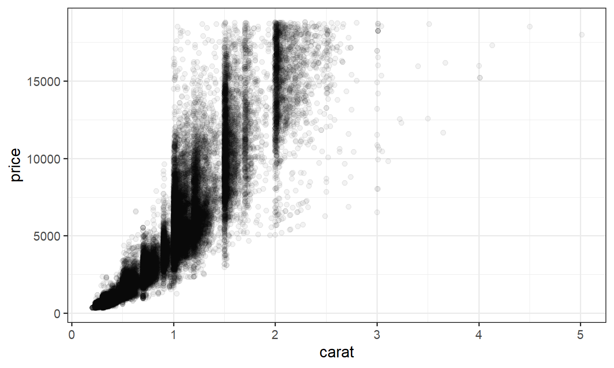
ggplot(diamonds, aes(x = cut, y = price)) +
geom_boxplot() +
scale_y_log10() +
theme_bw()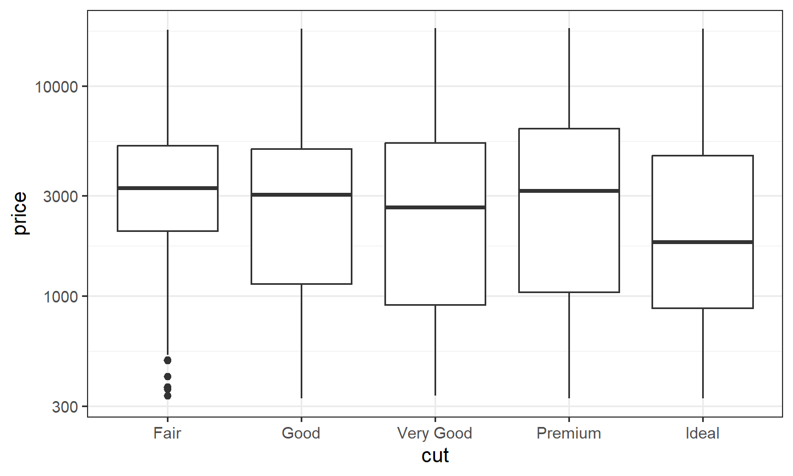
GGally::ggpairs() builds a panel of pairwise plots at once. Use it as a scan, then make the plots you actually need.
4. Mosaic plots: geom_mosaic()
geom_mosaic() lives in ggmosaic, which is not part of the tidyverse. Install it once in the console with install.packages("ggmosaic"). Do not put that call in a document.
Start with a small table whose areas you can check by hand. Two hundred people. Each row is one combination, and n is how many people sit in it. weight = n tells the mosaic to use those counts. Without it, every row would count as one person.
library(ggmosaic)
df_counts <- tribble(
~Exercise, ~Smoker, ~n,
"Low", "Smoker", 40,
"Low", "Non-smoker", 30,
"Medium", "Smoker", 20,
"Medium", "Non-smoker", 50,
"High", "Smoker", 10,
"High", "Non-smoker", 50
) |>
mutate(Exercise = factor(Exercise, levels = c("Low", "Medium", "High")))
ggplot(df_counts) +
geom_mosaic(aes(weight = n, x = product(Smoker, Exercise), fill = Smoker)) +
scale_x_productlist(name = "Exercise level") +
scale_y_productlist(name = "Smoking status") +
labs(title = "Area of each tile = number of people in both categories") +
theme_bw()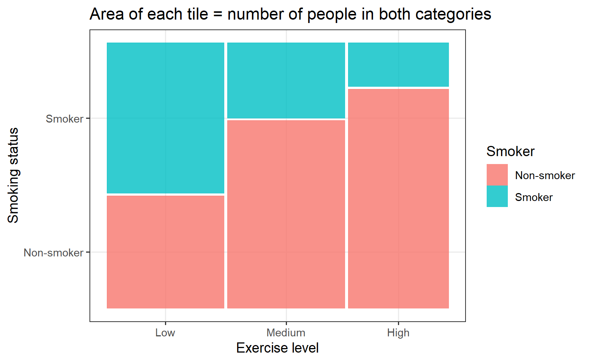
A product() axis ignores labs(x = ...) and labs(y = ...). scale_x_productlist() and scale_y_productlist() set those titles.
Exercise is the last argument of product(), so the columns are Low, Medium, and High. Smoker is both the first argument and the fill, so it is one split: the heights inside each column. The area of a tile is width times height.
- width = (people in that exercise group) / 200
- height = (people in that cell) / (people in that exercise group)
- area = width times height = (people in that cell) / 200
Low exercise (70 people). Width = 70/200 = 0.35. Smoker: height = 40/70 = 0.571, so area = 0.35 × 0.571 = 0.20, which is 40/200. Non-smoker: height = 30/70 = 0.429, so area = 0.35 × 0.429 = 0.15, which is 30/200.
Medium exercise (70 people). Width = 70/200 = 0.35. Smoker: height = 20/70 = 0.286, so area = 0.35 × 0.286 = 0.10, which is 20/200. Non-smoker: height = 50/70 = 0.714, so area = 0.35 × 0.714 = 0.25, which is 50/200.
High exercise (60 people). Width = 60/200 = 0.30. Smoker: height = 10/60 = 0.167, so area = 0.30 × 0.167 = 0.05, which is 10/200. Non-smoker: height = 50/60 = 0.833, so area = 0.30 × 0.833 = 0.25, which is 50/200.
| Exercise | Smoking status | Width | Height | Area | Count |
|---|---|---|---|---|---|
| Low | Smoker | 0.35 | 0.571 | 0.20 | 40 |
| Low | Non-smoker | 0.35 | 0.429 | 0.15 | 30 |
| Medium | Smoker | 0.35 | 0.286 | 0.10 | 20 |
| Medium | Non-smoker | 0.35 | 0.714 | 0.25 | 50 |
| High | Smoker | 0.30 | 0.167 | 0.05 | 10 |
| High | Non-smoker | 0.30 | 0.833 | 0.25 | 50 |
Check: 0.20 + 0.15 + 0.10 + 0.25 + 0.05 + 0.25 = 1. The six tiles fill the whole rectangle, and each area equals that cell’s count divided by 200.
The default offset is 0.01, a small gap between tiles. The drawn areas are slightly smaller than these exact values. The proportions are the same.
A bar chart of one categorical variable shows how many observations sit in each level. It throws away every other variable. A mosaic keeps two or more categorical variables in one rectangle. The area of each tile is the count of that combination. You read three facts at once:
- the width of a column is the share of observations in that level of the x variable
- the height of a tile inside the column is the share of the fill variable inside that level
- the area is the joint share, width times height
library(ggmosaic)
ggplot(diamonds) +
geom_mosaic(aes(x = product(cut), fill = color)) +
theme_bw()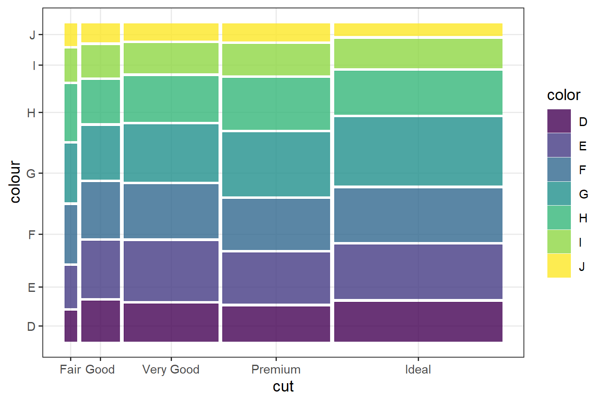
cut is the x variable, so Fair through Ideal get widths equal to how many diamonds have that cut. Inside each cut, the tiles are the conditional distribution of color. A tall tile means that color is common in that cut, not that it is common in the whole data set. Ideal is a wide column because most diamonds are Ideal. A rare color can still be a tall tile inside a narrow cut.
Where the mapping goes
geom_mosaic() sets inherit.aes = FALSE. A mapping written in ggplot(aes(...)) is ignored. Put aes() inside geom_mosaic().
# This draws nothing useful. The geom does not inherit the ggplot() mapping.
ggplot(diamonds, aes(x = product(cut), fill = color)) +
geom_mosaic()
# This is the call that works.
ggplot(diamonds) +
geom_mosaic(aes(x = product(cut), fill = color))With one x variable, product() is optional. These two calls are the same picture:
ggplot(diamonds) +
geom_mosaic(aes(x = product(cut), fill = color))
ggplot(diamonds) +
geom_mosaic(aes(x = cut, fill = color))product() is how you name every variable that forms the spines. The fill variable is the one you want to compare. Put the outcome there: Admit, Survived, a yes/no flag. The x variables are the groups you are comparing that outcome across.
product() order
Each argument of product() adds a split, and the splits alternate direction. The last argument is the first split.
With one variable, that split is vertical: the column widths. fill is the next split, so it is horizontal: the heights inside each column. That is the diamonds plot above. Area is still the joint count.
With two variables in product(), there is a third split, and the direction goes vertical again. fill then shares the x-axis with the last argument. The x labels become pairs, such as Admitted:A. The earlier argument of product() becomes the y-axis. These two plots are the same three variables and the same fill. Only the order inside product() changes. Each row of ucb is already a count, so both need weight = n. The next section says why.
ggplot(ucb) +
geom_mosaic(aes(weight = n, x = product(Gender, Dept), fill = Admit)) +
scale_x_productlist(name = "Admit and Dept") +
scale_y_productlist(name = "Gender") +
theme_bw() +
theme(axis.text.x = element_text(angle = 90, hjust = 1))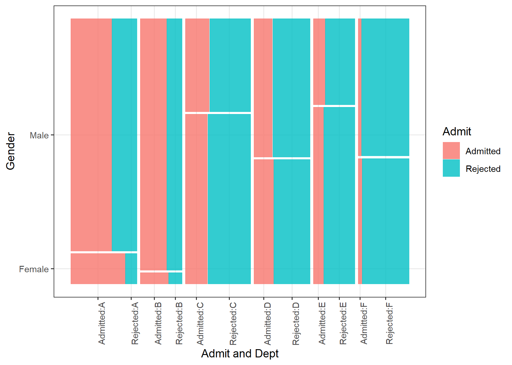
ggplot(ucb) +
geom_mosaic(aes(weight = n, x = product(Dept, Gender), fill = Admit)) +
scale_x_productlist(name = "Admit and Gender") +
scale_y_productlist(name = "Dept") +
theme_bw() +
theme(axis.text.x = element_text(angle = 90, hjust = 1))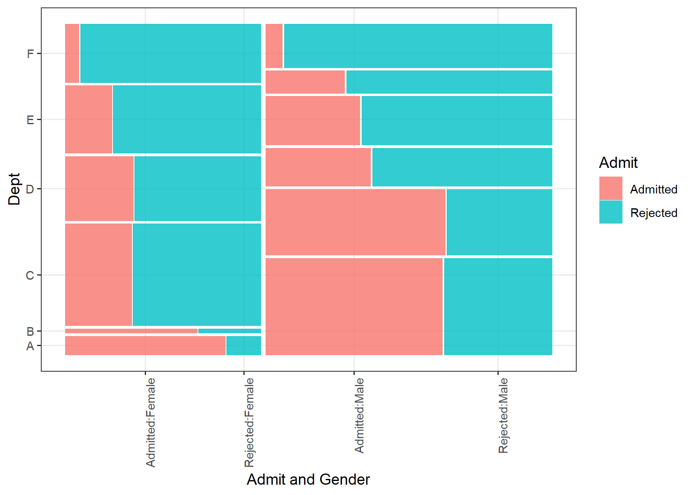
In the first plot Dept is last, so the x-axis groups are departments. Admit is drawn beside each department, not as a height: the labels are Admitted:A, Rejected:A, and so on. Gender is the earlier argument, so it is the y-axis. The female band is short because fewer women applied. When the x labels are pairs, rotate them 90 degrees so they do not overlap.
In the second plot the arguments are swapped. Gender is last, so the x-axis is Admitted:Female, Rejected:Female, Admitted:Male, Rejected:Male. Dept is now the y-axis. A tall band is a department with many applicants. Same fill. Different question.
Those pair labels are the reason to stop. A third variable is easier as a facet: each panel keeps the one-variable reading, where fill is a height. The Berkeley plots in the next section do that. If the columns are the wrong variable, reverse the arguments of product(). Do not move the outcome out of fill to fix the axis.
weight when the rows are already counts
geom_mosaic() counts rows. That is right for diamonds: one row is one diamond. It is wrong for UCBAdmissions. as_tibble() turns that table into one row per Admit–Gender–Dept cell, and the number of applicants is n. Without weight = n, every cell counts as one applicant, and a cell of 512 people looks the same size as a cell of 19.
ggplot(ucb) +
geom_mosaic(aes(weight = n, x = product(Gender), fill = Admit)) +
theme_bw()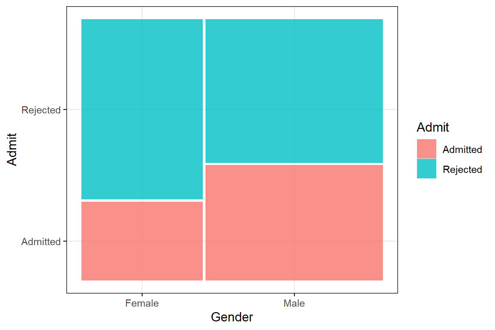
The male column is wider: more men applied. The Admitted tile is the share admitted inside that column. Men have the taller Admitted tile overall. That is one association. It is not yet the department story.
ggplot(ucb) +
geom_mosaic(aes(weight = n, x = product(Gender), fill = Admit)) +
facet_wrap(~ Dept, nrow = 1) +
theme_bw()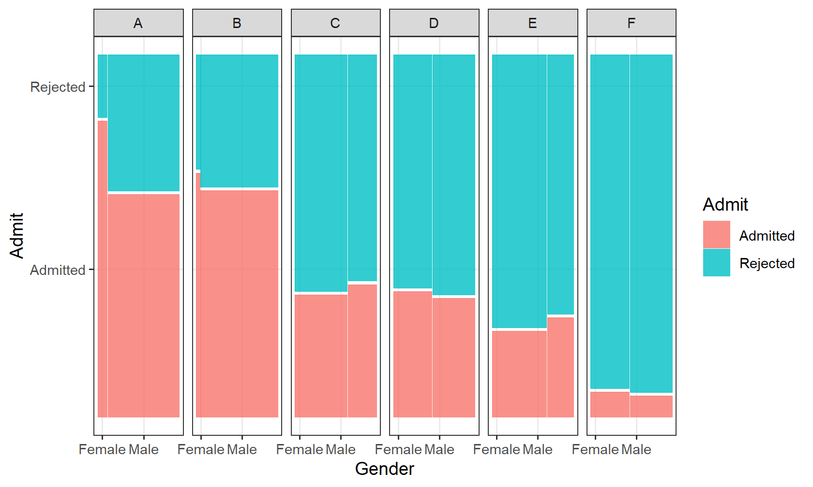
Each panel is one department. Read the Admitted tile inside the panel, and compare its height for women and for men. Also read the widths: some departments are mostly men, some are not. The overall mosaic averages those panels together, weighted by how many people applied. A department with a low admission rate and many women pulls the overall female rate down. The faceted mosaic is the picture of that. The help page calls conds = product(Dept) a compact substitute for facets. Facet labels are easier to read, so start there.
Gaps, dividers, and missing values
offset is the gap between tiles, as a fraction of the rectangle. The default is 0.01. offset = 0 sets the tiles flush, which is what you want when you are judging heights by eye.
ggplot(ucb) +
geom_mosaic(
aes(weight = n, x = product(Gender), fill = Admit),
offset = 0
)divider chooses how each split cuts the rectangle. The default, mosaic(), alternates direction: first a vertical spine, then a horizontal one. The other cuts are:
vspine: width fixed, height varieshspine: height fixed, width variesvbar: height fixed, width varieshbar: width fixed, height varies
Leave the default until a plot is unreadable. Then try divider = mosaic("v") to keep splitting vertically.
na.rm = FALSE drops missing combinations and warns. na.rm = TRUE drops them quietly. A mosaic of a variable with many NAs will silently shrink if you set na.rm = TRUE. Count the missing values first (section 6), then decide.
theme_mosaic() is the package theme: it removes the expansion around the rectangle so the tiles meet the axes. theme_bw() is enough for these notes. scale_x_productlist() replaces the x labels when product() builds names you do not want.
A mosaic with one very common level and one rare level looks like a thin stripe. That stripe is the point. Do not drop the rare level to make the picture prettier until you know the level is a coding error.
5. A third variable
Color and facets put a third variable on a plot you already trust. Color compares groups in one panel. Facets give each group its own panel, which is easier when the groups overlap.
ggplot(diamonds, aes(x = carat, y = price)) +
geom_point(alpha = 0.05) +
facet_wrap(~ cut, nrow = 1) +
theme_bw()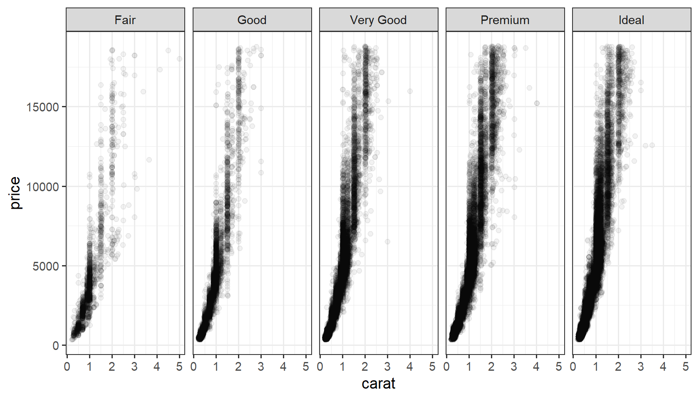
The same rise of price with carat shows up in every cut. The Ideal panel holds more points, which you already saw as a wide column in the mosaic. A smooth on top of these points would follow the curve. Add it only after the raw picture is clear.
6. Missingness, patterns, outliers
Count NAs by column (across and sum(is.na(.x)), note 5.1). A hole you expected to be filled is information. diamonds has none. starwars does.
starwars |>
summarize(across(c(height, mass, hair_color, species), ~ sum(is.na(.x))))# A tibble: 1 × 4
height mass hair_color species
<int> <int> <int> <int>
1 6 28 5 4A pattern is a relationship you can name: linear, curved, clustered, seasonal. An outlier is a point that does not follow that pattern. Do not delete it by reflex. Ask whether it is a data error or a real rare case. Note 3.1 (Anscombe) is why you plot before you trust a correlation.
7. This week, in one place
read_lines()thenread_csv()/read_tsv()/read_csv2()- check types,
NAs, and duplicates parse_*()andcol_typeswhen the guess is wrongwrite_csv()andsaveRDS()- EDA: one variable, then pairs, then a third variable
- two categorical variables:
prop.table(),geom_count(), orgeom_mosaic() - in a one-variable mosaic, width is a margin, height is a conditional share, area is the joint count
weightwhen the data are already counts
Chapter 11 of R for Data Science for readr; Chapter 7 for EDA. The geom_mosaic() help page has the divider list and the product() examples.
8. Practice
- For
diamonds, a bar chart ofcutand a histogram ofprice. - Boxplots of
pricebycut, log-y, colored or faceted bycolor. - A mosaic of
claritybycut. Which cut is the wide column, and does the mix of clarity look the same inside every cut? - Rebuild the Berkeley mosaic with
weight = n. Then facet byDept. In one sentence, say whether the overall gender gap still shows inside the departments.